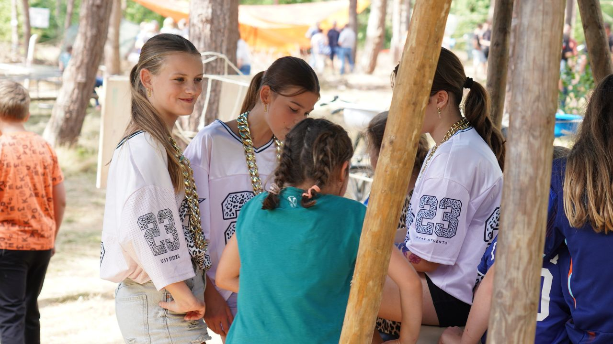
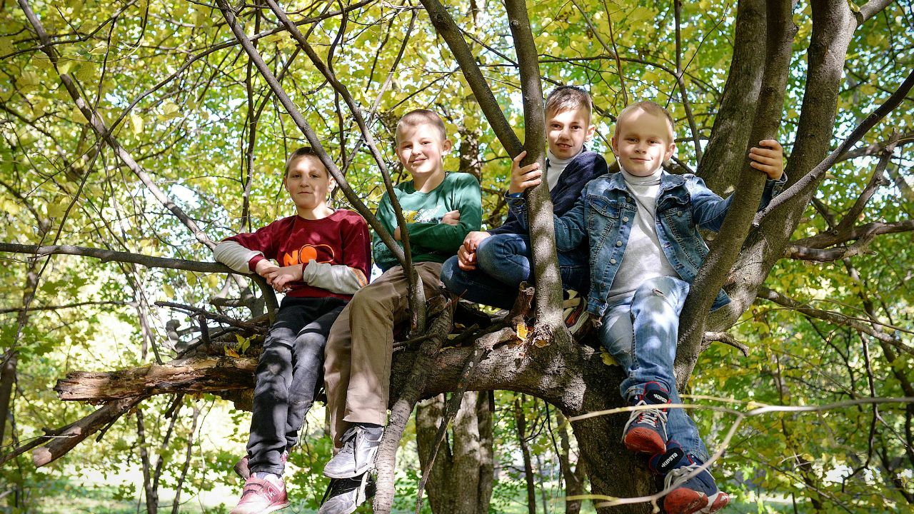
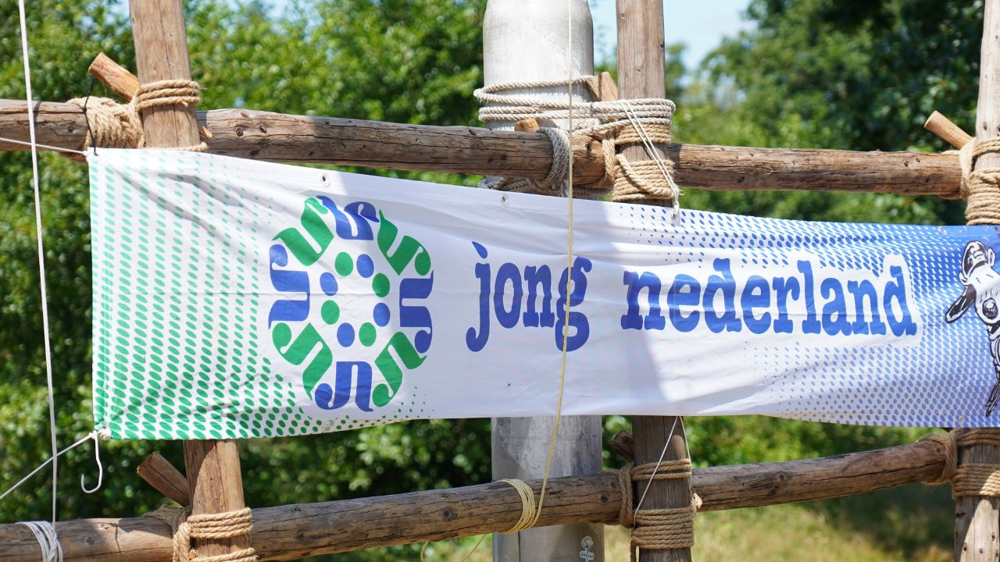

Jeugdactiviteit
Populair
Festival Back2Basic
Een grote landelijke activiteit waarbij afdelingen met groepen jeugdleden deelnemen.
Een grote landelijke activiteit waarbij afdelingen met groepen jeugdleden deelnemen.

VrijwilligersactiviteitMeerdaags evenement waar afdelingen met een groep vrijwilligers aan deelnemen.
Online sessie voor vrijwilligers en bestuur over actuele wet- en regelgeving.

JeugdactiviteitAfdelingen melden zich aan met een groep. Verwachte groepsgrootte is belangrijk voor planning.
Verplichte basiscursus EHBO voor nieuwe vrijwilligers. Certificaat na afronding.
Praktische sessie voor vrijwilligers die met communicatie binnen de afdeling bezig zijn.

CursusVerplichte training voor nieuwe leidinggevenden. Aanmelding loopt via je districtscoördinator.
 Jeugdactiviteit
Jeugdactiviteit
Het jaarlijkse zomerkamp voor jeugdleden van 8 t/m 15 jaar. Vier dagen vol avontuur en activiteiten.